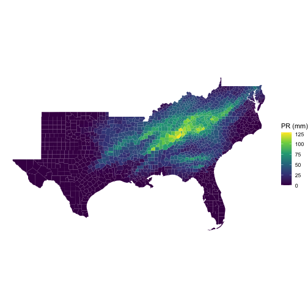
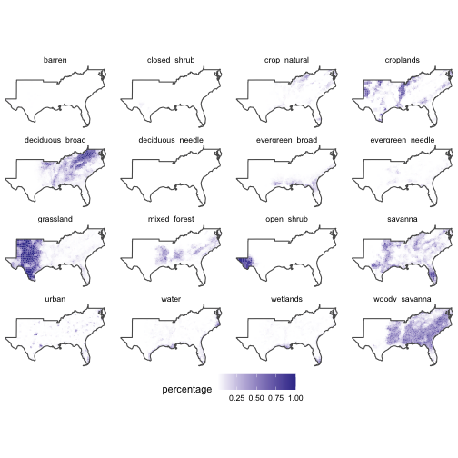

zonal is an active package for intersecting vector aggregation units with large gridded data. While there are many libraries that seek to tackle this problem (see credits) we needed a library that could handle large gridded extents storing categorical and continuous data, with multiple time layers with both many small vector units and few large units.
We also seek to segment the creation of grid weights from the zonal execution so that the same weight map can be applied across different products with the same structure.
Installation
You can install the development version of zonal from GitHub with:
# install.packages("remotes")
remotes::install_github("mikejohnson51/zonal")Example
This is a basic example that takes a NetCDF file containing a 4km grid for the continental USA and daily precipitation for the year 1979 (365 layers). Our goal is to subset this file to the southern USA, and compute daily county level averages. The result is a daily rainfall average for each county.
library(zonal)
library(dplyr)
library(tidyr)
library(ggplot2)
file <- 'to_build/pr_2020.nc'
AOI <- AOI::aoi_get(state = "south", county = "all")
system.time({
# Build Weight Grid
w = weighting_grid(file, AOI, "geoid")
# Intersect
pr_zone = execute_zonal(file, w = w)
})
#> user system elapsed
#> 7.990 1.159 9.234
# PET zone: Counties, time slices/ID
dim(pr_zone)
#> [1] 1421 367Daily maximum mean rainfall in a county?
x = merge(AOI, pr_zone)
# Plot Day with the maximum single county max rainfall.
n = colnames(pr_zone)[which(pr_zone[,-1] == max(pr_zone[,-1]), arr.ind = TRUE)[2] + 1]
ggplot() +
geom_sf(data = x, aes(fill = get(n)), color = NA) +
scale_fill_viridis_c() +
theme_void() +
labs(fill = "PR (mm)")
Daily maximum rainfall in the south?
# Plot Day with the maximum county wide rainfall
n2 = names(which.max(colSums(dplyr::select(pr_zone, -geoid))))
ggplot() +
geom_sf(data = x, aes(fill = get(n2)), color = NA) +
scale_fill_viridis_c() +
theme_void() +
labs(fill = "PR (mm)")
Timeseries of conuty with maximum annual rainfall
data = pr_zone %>%
slice_max(rowSums(select(., -geoid))) %>%
pivot_longer(-geoid, names_to = "day", values_to = "prcp") %>%
mutate(day = as.numeric(gsub("V","", day)))
head(data)
#> # A tibble: 6 × 3
#> geoid day prcp
#> <chr> <dbl> <dbl>
#> 1 37175 1 0
#> 2 37175 2 26.7
#> 3 37175 3 13.6
#> 4 37175 4 0.234
#> 5 37175 5 0.144
#> 6 37175 6 2.52
1km Landcover Grid (Categorical)
One of the largest limitations of existing utilities is the ability to handle categorical data. Here we show an example for a 1km grid storing land cover data from MODIS. This grid was creating by mosacing 19 MODIS tiles covering CONUS.
file = 'to_build/2019-01-01.tif'
rcl = read.csv("to_build//modis_lc.csv") %>%
select(from = Class, to = short)
system.time({
lc = execute_zonal_cat(file, AOI, "geoid", rcl = rcl)
})
#> user system elapsed
#> 6.889 1.599 8.554
Getting involved
- Code style should attempt to follow the tidyverse style guide.
- Please avoid adding significant new dependencies without a documented reason why.
- Please attempt to describe what you want to do prior to contributing by submitting an issue.
- Please follow the typical github fork - pull-request workflow.
- Make sure you use roxygen and run Check before contributing.
Credits and references
A list of direct and indirect dependencies can be seen here:
rcompendium::get_all_dependencies()
#> $base_deps
#> character(0)
#>
#> $direct_deps
#> [1] "data.table" "exactextractr"
#> [3] "ncmeta" "R"
#> [5] "raster" "RNetCDF"
#> [7] "terra"
#>
#> $all_deps
#> [1] "classInt" "cli" "cpp11"
#> [4] "crayon" "DBI" "dplyr"
#> [7] "e1071" "ellipsis" "fansi"
#> [10] "generics" "glue" "lifecycle"
#> [13] "magrittr" "pillar" "pkgconfig"
#> [16] "proxy" "purrr" "R6"
#> [19] "Rcpp" "rlang" "s2"
#> [22] "sf" "sp" "tibble"
#> [25] "tidyr" "tidyselect" "units"
#> [28] "utf8" "vctrs" "wk"Similar R packages:
Logo Artwork: Justin Singh-Mohudpur